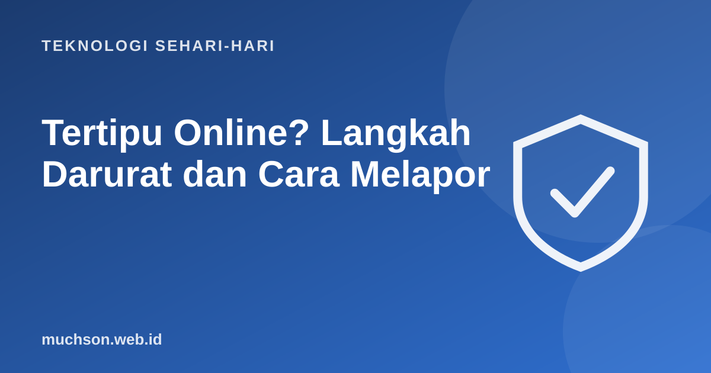

Beranda › Artikel › Teknologi Sehari-hari
Teknologi Sehari-hariTertipu Online? Langkah Darurat dan Cara Melapor
Sudah transfer, barang tidak datang, dan nomor penjual tidak bisa dihubungi. Rasa panik dan malu sering membuat korban diam. Padahal dalam kasus penipuan transfer, kecepatan melapor sangat menentukan: semakin cepat rekening pelaku diblokir, semakin besar peluang dana tertahan.

Langkah darurat dalam jam pertama
- Hentikan komunikasi dengan pelaku. Jangan tergoda "biaya tambahan agar uang kembali" karena itu penipuan lanjutan.
- Hubungi bank atau penyedia e-wallet Anda lewat nomor resmi di kartu atau aplikasi. Jelaskan bahwa Anda korban penipuan dan minta rekening tujuan ditindaklanjuti.
- Laporkan ke Indonesia Anti-Scam Centre (IASC) milik OJK di iasc.ojk.go.id. IASC dibentuk untuk mempercepat penanganan penipuan di sektor keuangan, termasuk pemblokiran rekening.
- Laporkan rekening pelaku di CekRekening.id agar orang lain bisa mengecek sebelum transfer.
- Lapor ke polisi dengan membawa bukti.
Hati-hati situs palsu
IASC menerima laporan hanya melalui situs resminya. OJK pernah memperingatkan adanya situs palsu yang mengatasnamakan IASC. Verifikasi lewat kontak OJK 157 bila ragu.
Bukti yang perlu disimpan
Ke mana melapor, untuk apa
| Tujuan | Untuk |
|---|---|
| Bank atau e-wallet Anda | Penanganan transaksi dan permintaan blokir rekening tujuan |
| IASC OJK (iasc.ojk.go.id) | Penanganan penipuan sektor keuangan secara terpadu |
| Kontak OJK 157 | Informasi dan verifikasi layanan OJK |
| CekRekening.id (Komdigi) | Melaporkan dan mengecek rekening yang terindikasi penipuan |
| Kepolisian | Laporan pidana; bisa di kantor polisi terdekat |
| Platform (marketplace, media sosial) | Melaporkan akun atau toko pelaku |
Mencegah lain kali
Melapor itu penting
Rasa malu membuat banyak korban tidak melapor. Padahal laporan Anda membantu pemblokiran rekening pelaku dan mencegah korban berikutnya. Penipu modern sangat terlatih; siapa pun bisa menjadi korban.
Tanya jawab
Apa yang harus dilakukan pertama kali setelah tertipu transfer?
Hentikan komunikasi dengan pelaku, segera hubungi bank Anda lewat nomor resmi, lalu laporkan ke Indonesia Anti-Scam Centre OJK.
Apa itu IASC OJK?
Indonesia Anti-Scam Centre, pusat penanganan penipuan sektor keuangan yang dikoordinasikan OJK. Laporan disampaikan lewat iasc.ojk.go.id.
Apakah uang bisa kembali?
Tidak selalu, tetapi peluangnya lebih besar bila rekening pelaku cepat diblokir sebelum dana dipindahkan. Karena itu kecepatan melapor penting.
Bagaimana mengecek rekening penipu?
Gunakan CekRekening.id untuk melihat apakah rekening pernah dilaporkan. Hasil bersih tidak menjamin aman, tetap waspada.
Sumber dan bacaan lanjut
- OJK: Indonesia Anti-Scam Centre (IASC)
- OJK: soft launching IASC oleh Satgas PASTI
- CekRekening.id (Komdigi)
- JDIH Komdigi: infografis CekRekening.id